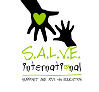

Website design
CACH-ALL (2021-Present)

I joined CACH-ALL as an intern and led the migration of material from the old Joomla website over to Wordpress whilst ensuring the website is modern, accessible and up to date.
I worked with the social media interns to update the branding across the site to reflect our membership.
A key feature of the website is the membership portal, allowing members to safety log in and view content.
S.A.L.V.E International (2022)
In 2022, I joined S.A.L.V.E International as the Website and Marketing Intern where I was tasked with updating the layout and content of several pages on Wordpress considering SEO and accessibility requirements.
I created a new pack of fundraising pages, organised school resources using categories and filters functionality as well as presented my work to the Board.
Angela Rigby Doble (2021-Present)

Designing and maintaining my mother's website, including adding a way to categorise artwork as well as integrating a contact form